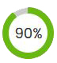
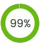
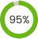

Puppywaggy - Peluche antistress per il tuo cucciolo
Morbido peluche creato per la serenità dei tuoi cuccioli, dotato di strumento per la simulazione del battito cardiaco. Il miglior alleato per combattere momenti delicati e potenzialmente stressanti per i vostri piccoli amici.
- Allevia la solitudine, la paura e l'ansia da separazione.
- Ha un effetto calmante scientificamente provato.
- Aiuta i cuccioli a dormire durante la notte.
- Riduce l'ansia causata dai fuochi d'artificio, dai temporali o da altri rumori forti.
- Offre conforto ogni volta che il tuo cucciolo ha bisogno di un po' di aiuto in più per rilassarsi.
Il pacchetto include:
Puppywaggy, simulatore battito cardiaco.
Dimensioni: circa 20 x 35 x 18 cm.
Peso: 252 gr.
Materiale: peluche di alta qualità, cotone PP.
Macchina per il battito cardiaco incorporata.
Batterie: 2 * AAA (non incluse)
SPEDIZIONE TOTALMENTE GRATUITA! Appena riceviamo il tuo ordine prepariamo il Peluche per la spedizione e consegna entro 24/48 ore.
Vogliamo che i nostri clienti siano sempre felici, soddisfatti e tranquilli riguardo ogni acquisto.
Per questo motivo, se il tuo ordine ha problemi di qualunque tipo entro 14 giorni dalla consegna, potrai restituirlo ottenendo un rimborso totale.
Il modo sicuro e naturale per ridurre l'ansia dei tuoi cuccioli
- Induce calma e riduce naturalmente i comportamenti legati all'ansia attraverso l'istinto, non con farmaci.
- Ricrea l'intimità e il calore della loro cuccia con un battito cardiaco realistico e un pack termico sicuro
- Facile da accendere e spegnere secondo necessità.
- Facile da pulire - Puppywaggy è lavabile in lavatrice.
Guarda Puppywaggy in azione...
"I miei cani amano Puppywaggy"
"Innamorata del suo Puppywaggy"
“Bellissimo regalo per il mio animale”
"Davvero vale
l'acquisto"
Perchè Tutti Amano il Nostro Puppywaggy ✨

Sollievo dall'ansia
Sollievo dall'ansia: i giocattoli per cuccioli per cani progettati con la forma del cane possono aiutare i cuccioli ad alleviare l'ansia di separazione e la depressione in mancanza di un compagno, per sentirsi a proprio agio anche in ambienti complessi, come il trasferimento alla nuova casa e in viaggio.

Simula il battito cardiaco
Battito cardiaco realistico: con battito cardiaco reale e peluche morbido dona ai cani un senso di sicurezza, i giocattoli per l'ansia per i cani possono aiutare ad adattarsi rapidamente al nuovo ambiente.


Coccole per il tuo cucciolo
Costruito rapporto intimo: ai cani piace vivere in gruppi e coccolarsi con i loro amici, da qui il peluche del cane con battito cardiaco.

Ottimi materiali
Detail Design: realizzato in morbido, confortevole, materiale peluche è delicato sulla pelle e l'interno è riempito in morbido cotone polipropilene La tasca della pancia è chiusa con una cerniera per prevenire la caduta del cuore dal corpo.
Puppywaggy, il compagno perfetto per un sonno tranquillo e una crescita felice 🔥
Un cuore che batte accanto al tuo cucciolo, per un'amicizia che dura una vita
Calma naturale
- Calma naturale: Aiuta a calmare i cuccioli in modo naturale, simile al comfort che ricevono dalla presenza della madre.
- Promuove il sonno tranquillo: Il battito cardiaco simulato aiuta i cuccioli a addormentarsi più facilmente e a dormire tranquillamente.
- Riduce l'ansia da separazione: Aiuta i cuccioli ad adattarsi meglio alle situazioni di separazione dalla madre o dai loro proprietari umani.
- Promuove la fiducia: Offre ai cuccioli un senso di sicurezza e fiducia, contribuendo alla loro crescita e al loro benessere emotivo.


Sostituto della compagnia
- Sviluppo comportamentale: Aiuta a ridurre i comportamenti indesiderati legati all'ansia, come masticare o piangere.
- Sostituto della compagnia: Fornisce compagnia ai cuccioli quando sono soli, riducendo il senso di solitudine.
- Facile da usare: È semplice da attivare e da spegnere, offrendo flessibilità e praticità.
- Materiali sicuri e durevoli: Realizzato con materiali sicuri e resistenti che garantiscono la sicurezza del cucciolo durante il gioco.
Promuove l'indipendenza
- Facile da pulire: È lavabile in lavatrice, il che lo rende facile da mantenere pulito e igienico.
- Adatto a tutte le razze: È adatto a cuccioli di tutte le taglie e razze, offrendo beneficio a un'ampia gamma di cuccioli.
- Promuove l'indipendenza: Aiuta i cuccioli a sviluppare una maggiore indipendenza, permettendo loro di sentirsi al sicuro anche quando non sono costantemente sotto la supervisione dei proprietari.
- Azione rilassante a lungo termine: Grazie alla durata prolungata del battito cardiaco simulato, Puppywaggy offre un effetto calmante costante nel tempo, supportando il benessere emotivo del cucciolo durante tutta la giornata.


Qualche Numero
-  Calma naturale e comfort sicuro.
-  Riduce l'ansia e favorisce il sonno.
-  Materiali sicuri e praticità.
Puppywaggy crea un legame emotivo grazie al suo battito cardiaco simulato, fornendo comfort e tranquillità ai cuccioli in ogni momento.
Come usare Puppywaggy

Estrarre da Puppywaggy il dispositivo che simula il battito ed aprire l'alloggamento delle batterie.

Inserire due batterie tipo AAA (non fornite).

Attivare il dispositivo premendo il pulsante nero e reinserirlo all'interno di Puppywaggy.

Posizionare Puppywaggy vicino al tuo cucciolo.
Venditore Italiano professionale con Partita IVA